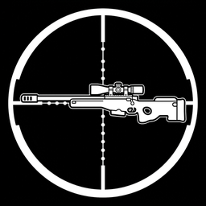
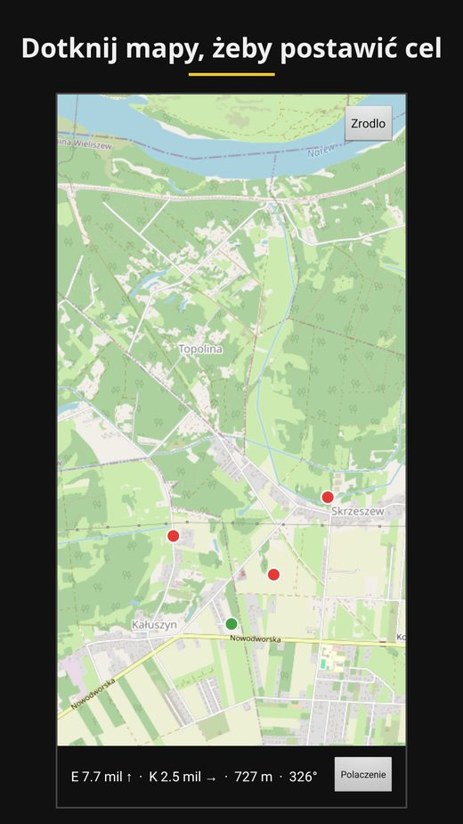
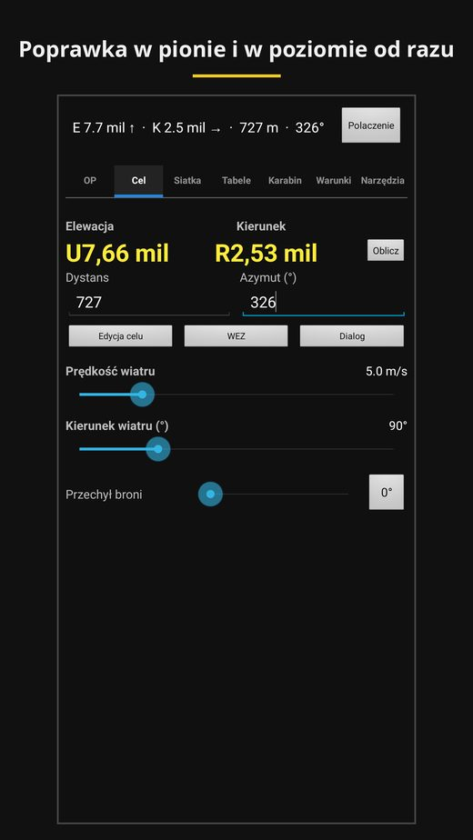
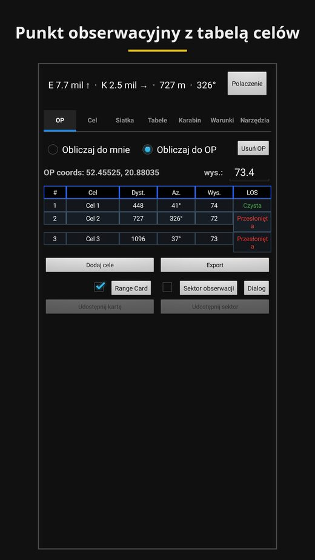

Closed testing on Google PlaySniperKIT
Android app
The SniperTAK ballistic calculator as a standalone app with its own map. No ATAK and no TAK server needed.
Why it exists
Not every shooter has ATAK. The military build needs clearance, and the civilian one is a separate app to install and learn.
SniperKIT uses the same engine as the SniperTAK plugin, but on its own OpenStreetMap map. A tap on the map places a target. The app reads range, bearing and shot angle from the map and the terrain.
What it computes
- elevation and windage in mils, recalculated after every change,
- time of flight, velocity and energy at the target, hit probability, danger space,
- a target table and a range card for an observation post, with CSV export,
- ballistic tables at fixed distance steps,
- WEZ, the hit probability derived from the uncertainty of your inputs.
The solution is computed only from a complete rifle profile. An empty field gets no default value. The app tells you which value is missing.
Sharing with TAK clients
The app sends the shooter position, the observation post and targets as Cursor on Target events, the format TAK clients use. Events go over multicast on the local network or over TCP to an address you enter. Unsent events wait on the phone until the connection returns.
How it was made
Of the 124 files in the SniperTAK plugin, only 8 touched the ATAK library. 47 engine files moved into the app unchanged, together with 470 tests. The weight of the port sat in one interface file of 7,724 lines.
Screenshots


